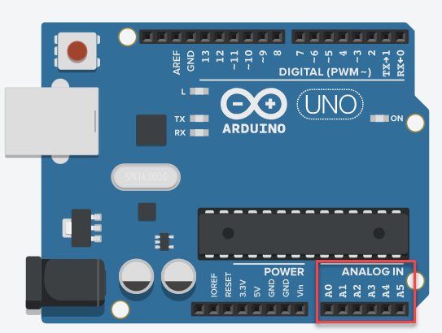

Met analogRead() kan je analoge spanningen inlezen op de analoge pinnen van je Arduino.

Deze functie zet een analoge spanning om naar een digitale waarde die je in je programma kan gebruiken.
De Arduino gebruikt een ingebouwde ADC (Analog-to-Digital Converter) om analoge signalen om te zetten naar digitale waarden. Bij de meeste Arduino borden (zoals de Uno of Leonardo) heeft de ADC een resolutie van 10 bits, wat betekent dat de waarde tussen 0 en 1023 (2^10 = 1024) ligt:
const int analogePin = A0;
void setup()
{
pinMode(analogePin, INPUT); // OPTIONEEL
Serial.begin(9600);
}
void loop()
{
int waarde = analogRead(analogePin); // Een geheel getal tussen 0 en 1023
double spanning = waarde / 1023.0 * 5; // De overeenkomstige spanning tussen 0V en 5V
Serial.print(waarde);
Serial.print(" komt overeen met ");
Serial.print(spanning);
Serial.println(" V");
delay(500); // anders overspoel je de seriële monitor
}Als we zouden delen door 1023 (een int) dan is in de breuk zowel de teller als de noemer een int en dan maken we de gehele deling. Het resultaat zou dus geen cijfer na de komma bevatten. Zie ook het hoofdstuk Wiskundige operatoren in labo 0.